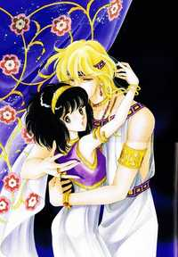

-
Alternative Names: Anatolia Story; Heaven Is Beside the Red River; The Sky is Near the Red River; Sora wa Akai Kawa no Hotori
Author(s): Shinohara Chie
Genres: Action, Adventure, Drama, Fantasy, Historical, Mature, Romance, Shoujo, Supernatural, Tragedy
Release: 1995
Status: Complete
Type: Manga
Length: 28 Volumes Chapters
Read Online @:

More Info @:

Notes
A female teenager gets pulled into the past by an evil queen's water magic in order to use her as a sacrifice! Yuri, the teen, is saved by Prince Kail and they ssearch for a way to get yuri back.